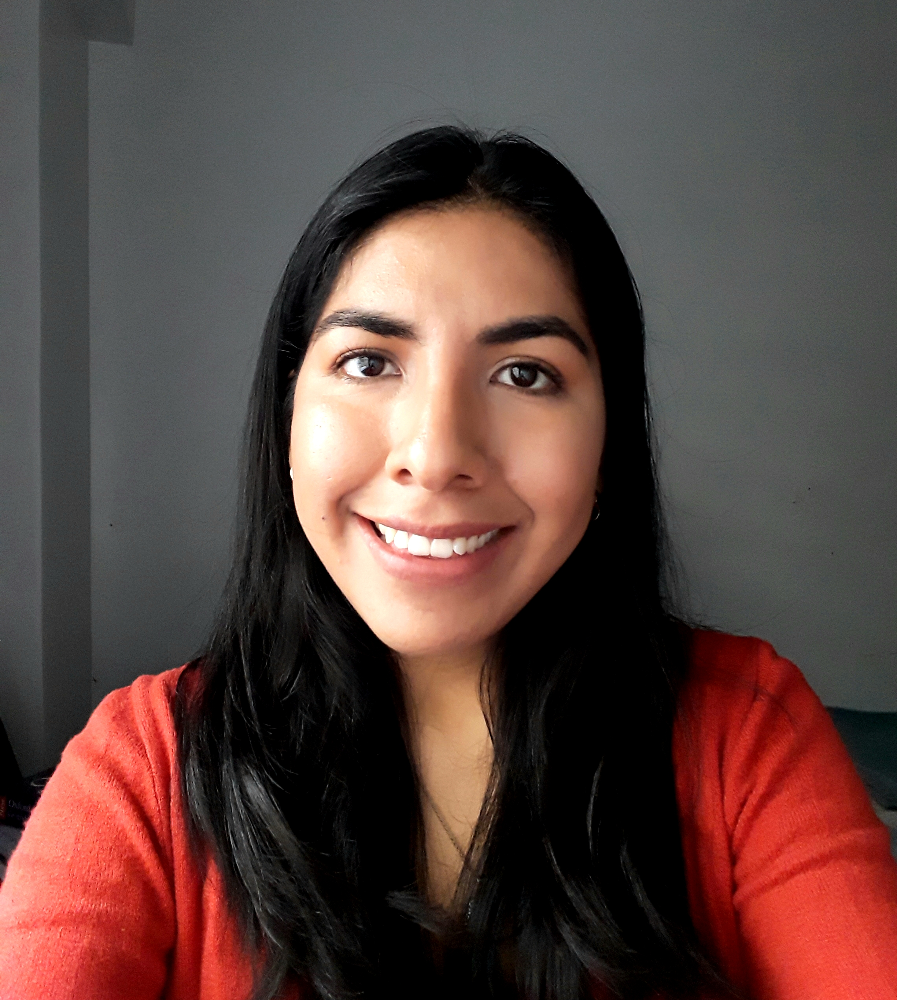

Un poco más acerca de mi persona...

- Tengo un historial de carreras diverso. Tuve la dicha y oportunidad de surfear en diferentes rubros y adquirir nuevas experiencias y conocimientos, entre ellos: pastelería, hotelería, administración de empresas, y psicología; y varios cursos.
- Encontré mi vocación a los 23 años cuando conocí la carrera de Counseling, dedicada al acompañamiento de las personas en momentos de crisis, y al desarrollo de sus potencialidades a través de la psicoeducación y el autoconocimiento.
- Actualmente me dedico de tiempo completo al estudio, dividiendo mi tiempo entre mi curso de Digital House y mi carrera de Counseling, mientras continúo en la búsqueda de empleo.
- Amo la pastelería, el teatro, y cualquier actividad que involucre la expresión corporal o la creatividad. Adoro el baile, el karaoke, los perros, y los matecitos con amigos.
- Soy pésima en los deportes y no tengo idea de superheroes, con lo que esta materia me está enseñando más de lo que pensaba.